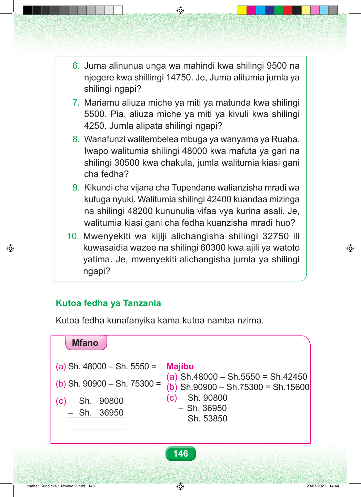

Swali namba sita. Juma alinunua unga wa mahindi kwa shilingi elfu tisa mia tano, na njegere kwa shilingi elfu kumi na nne mia saba hamsini. Je, Juma alitumia jumla ya shilingi ngapi? Swali namba saba. Mariamu aliuza miche ya miti ya matunda kwa shilingi elfu tano mia tano. Pia aliuza miche ya miti ya kivuli kwa shilingi elfu nne mia mbili hamsini. Jumla alipata shilingi ngapi? Swali namba nane. Wanafunzi walitembelea mbuga ya wanyama ya Ruaha. Walitumia shilingi elfu arobaini na nane kwa mafuta ya gari na shilingi elfu thelathini mia tano kwa chakula. shilingi 30500 kwa chakula, jumla walitumia kiasi gani Jumla walitumia kiasi gani cha fedha? Swali namba tisa. Kikundi cha vijana cha Tupendane kilianzisha mradi wa kufuga nyuki. Walitumia shilingi elfu arobaini na mbili mia nne kuandaa mizinga, na shilingi elfu arobaini na nane mia mbili kununulia vifaa vya kurina asali. Walitumia kiasi gani cha fedha kuanzisha mradi huo? Swali namba kumi. Mwenyekiti wa kijiji alichangisha shilingi elfu thelathini na mbili mia saba hamsini kuwasaidia wazee, na shilingi elfu sitini mia tatu kwa ajili ya watoto yatima. yatima. Je, mwenyekiti alichangisha jumla ya shilingi Je, mwenyekiti alichangisha jumla ya shilingi ngapi? Kutoa fedha ya Tanzania Kutoa fedha kunafanyika kama kutoa namba nzima. Mfano. Sehemu a. Shilingi elfu arobaini na nane kutoa shilingi elfu tano mia tano hamsini, sawa sawa na shilingi elfu arobaini na mbili mia nne hamsini. Sehemu b. Shilingi elfu tisini mia tisa kutoa shilingi elfu sabini na tano mia tatu, sawa sawa na shilingi elfu kumi na tano mia sita. Sehemu c. Hesabu imepangwa kwa wima. Shilingi elfu tisini mia nane, kutoa shilingi elfu thelathini na sita mia tisa hamsini, sawa sawa na shilingi elfu hamsini na tatu mia nane hamsini. 146 Hisabati Kundirika 1 Mwaka 2.indd 146 23/07/2021 14:44